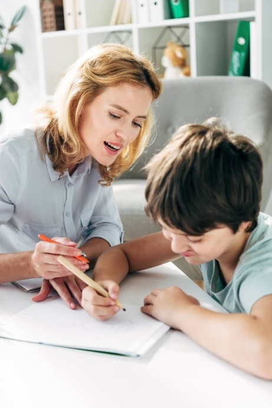
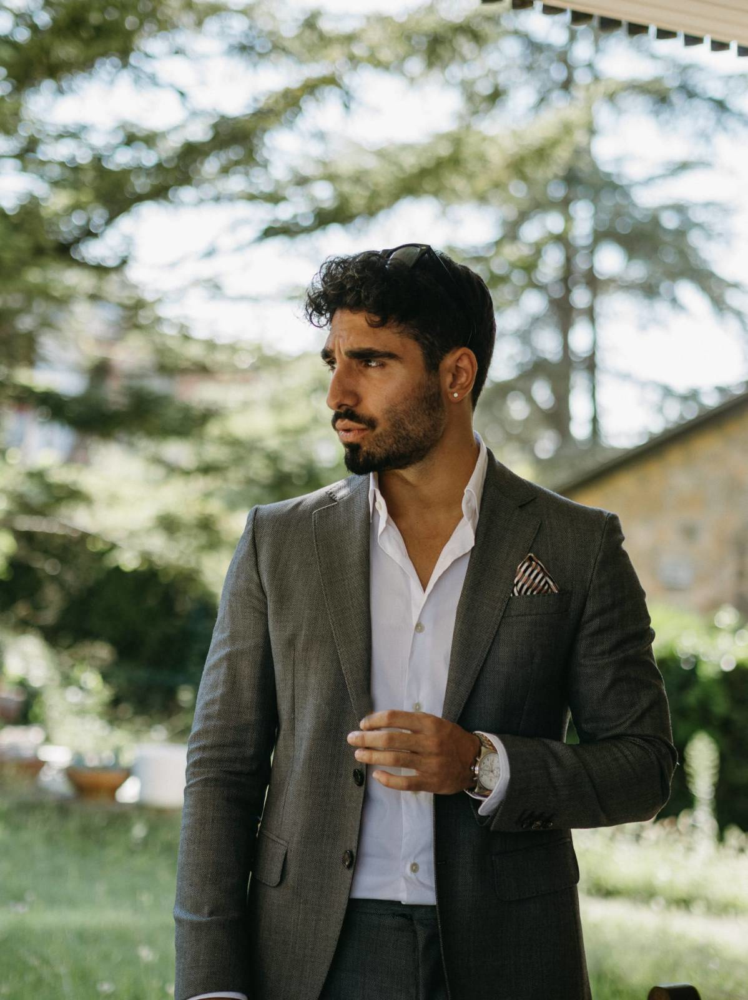

Sóc l'Eduard, psicòleg especialitzat en infància i adolescència. Ofereixo un espai segur, proper i sense presses perquè nens, nenes i adolescents puguin entendre's millor i créixer al seu ritme.
Soy Eduard, psicólogo especializado en infancia y adolescencia. Ofrezco un espacio seguro, cercano y sin prisas para que niños, niñas y adolescentes puedan entenderse mejor y crecer a su ritmo.
Reservar primera entrevista Reservar primera entrevista Coneix-me Conóceme

Tinc una llarga trajectòria acompanyant nens, nenes i adolescents en consulta privada, i cada història m'ensenya una nova manera d'escoltar.
Tengo un amplia trayectoria acompañando a niños, niñas y adolescentes en consulta privada, y cada historia me enseña una nueva manera de escuchar.
El meu treball parteix d'una idea clara: cada infant és únic, i el seu benestar depèn tant d'ell com del seu entorn. Per això em centro no sols en el diagnòstic, sinó en comprendre la globalitat de la situació: l'infant, la família, l'escola.
Mi trabajo parte de una idea clara: cada niño es único, y su bienestar depende tanto de él como de su entorno. Por eso me centro no solo en el diagnóstico, sino en comprender la globalidad de la situación: el niño, la familia, la escuela.
Utilitzo un abordatge terapèutic integrador, tot combinant l'enfocament sistèmic amb tècniques cognitiu-conductuals, adaptant-me a cada cas i a cada moment vital.
Utilizo un abordaje terapéutico integrador, combinando el enfoque sistémico con técnicas cognitivo-conductuales, adaptándome a cada caso y a cada momento vital.
Aquests són els motius de consulta més habituals. Si la situació que viviu no hi surt reflectida, parlem-ne sense compromís.
Estos son los motivos de consulta más habituales. Si la situación que vivís no aparece reflejada, hablamos sin compromiso.
Ansietat, tristesa, canvis d'humor, regulació emocional, baixa autoestima o por constant.
Ansiedad, tristeza, cambios de humor, regulación emocional, baja autoestima o miedo constante.
Ràbies intenses, oposició, conductes disruptives a casa o a l'escola, dificultats per respectar normes.
Rabietas intensas, oposición, conductas disruptivas en casa o en la escuela, dificultades para respetar normas.
Acompanyament a infants i adolescents amb Trastorn de l'Espectre Autista, TDAH o altres diagnòstics del neurodesenvolupament.
Acompañamiento a niños y adolescentes con Trastorno del Espectro Autista, TDAH u otros diagnósticos del neurodesarrollo.
Problemes d'aprenentatge, falta de motivació, frustració davant els estudis, atenció o rendiment per sota del potencial.
Problemas de aprendizaje, falta de motivación, frustración ante los estudios, atención o rendimiento por debajo del potencial.
Espai segur per parlar d'identitat, relacions, gestió de les emocions i els canvis propis d'aquesta etapa.
Espacio seguro para hablar de identidad, relaciones, gestión de las emociones y los cambios propios de esta etapa.
Suport als pares i mares, estratègies educatives, coordinació amb centres escolars per al seguiment del procés.
Apoyo a padres y madres, estrategias educativas, coordinación con centros escolares para el seguimiento del proceso.
Abans de començar, t'explico com és el procés, perquè en tot moment sàpigues què esperar.
Antes de empezar, te explico cómo es el proceso, para que en todo momento sepas qué esperar.
Una conversa breu i gratuïta, d'uns 15 minuts, perquè m'expliquis què us porta i resoldre dubtes. Sense compromís.
Una conversación breve y gratuita, de unos 15 minutos, para que me cuentes qué os trae y resolver dudas. Sin compromiso.
Una hora d'escolta i exploració de la situació. En acabar, us proposo un pla: cap on anar, amb quin ritme i durada estimada.
Una hora de escucha y exploración de la situación. Al terminar, os propongo un plan: hacia dónde ir, con qué ritmo y duración estimada.
Sessions setmanals al principi, espaiades segons la necessitat. Presencials a Manresa (NEUROLOPSI / SINAPSI) o en línia.
Sesiones semanales al principio, espaciadas según necesidad. Presenciales en Manresa (NEUROLOPSI / SINAPSI) o en línea.
Us responc personalment en menys de 24 hores laborables.
Os respondo personalmente en menos de 24 horas laborables.
eduard.sanchez_psicoleg@protonmail.com
NEUROLOPSI · Manresa
SINAPSI · Artés
NEUROLOPSI · Manresa
SINAPSI · Artés
Presencial i en línia
Presencial y en línea
Dilluns a divendres, amb cita prèvia
Lunes a viernes, con cita previa